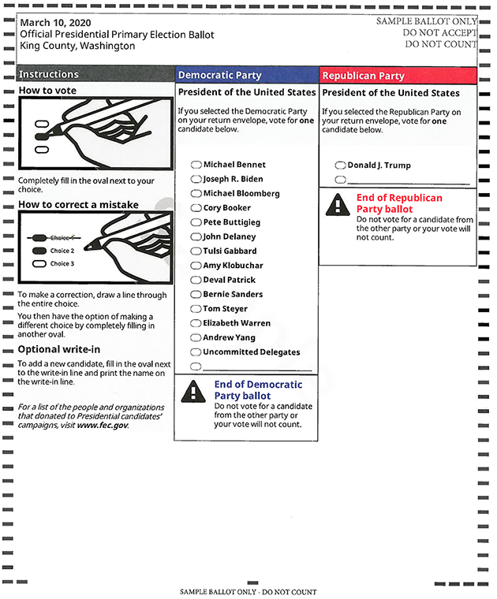

A look at Washington state’s 2020 primary ballot and envelope

The ballot
Democratic vote counts.
For the first time, Washington Democrats are using the state primary, instead of caucuses, to award presidential delegates. The 13 listed candidates include several who have ended their campaigns since the ballot was finalized. The state’s 89 up-for-grabs delegates to the Democratic National Convention will be divided proportionately among candidates receiving at least 15% of the vote statewide or in any congressional district.
Source: Washington Secretary of State
Jim Brunner and Hilary Fung / The Seattle Times